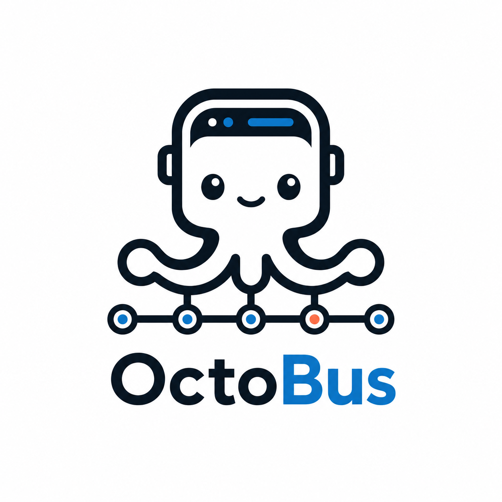

智能体不应该裸连内部系统
企业内部系统通常带有专有协议、敏感配置和强依赖上下文，不适合让智能体直接持有和调用。

OctoBus 是面向 AI Agent 的本地能力网关，把企业内部 gRPC/Node.js 服务安全、可控地暴露为 gRPC、Connect RPC、MCP 和 OpenAPI 能力。
npm install -g @chaitin-ai/octobus octobus serve
企业内部系统通常带有专有协议、敏感配置和强依赖上下文，不适合让智能体直接持有和调用。
不同场景、不同智能体和不同实例需要不同的权限边界、配置参数和调用记录。
不应该让 MCP 工具以零散脚本和独立进程的方式散落在各处，而应该统一接入、统一开放。
可导入的 Node.js 服务包。包含 proto、schema、运行入口和具体实现。
带独立 config / secret / workdir 的运行实例，用于承载一个 service 的具体运行上下文。
面向智能体或场景的一组能力集合，用来决定哪些方法可以暴露、给谁暴露。
capset 中实际选择并开放的具体方法，是 gRPC / Connect RPC / MCP / OpenAPI 暴露的最小单元。
先启动本地 daemon，默认监听 localhost:9000。
npm install -g @chaitin-ai/octobus
octobus serve
导入一个本地或 npm 分发的 Node.js gRPC 服务包。
octobus service import ./examples/calculator-js
创建带独立配置与工作目录的 service instance。
octobus instance create calculator-test calculator-js
创建 capset，添加 instance，并通过 Connect RPC / MCP / gRPC 调用方法。
octobus capset create dev
octobus capset add-instance dev calculator-test
| 协议 | 支持形态 | 说明 |
|---|---|---|
| gRPC | unary + streaming | 完整保留 gRPC 方法语义，适合长连接和 streaming 方法。 |
| Connect RPC | unary | 通过 HTTP 暴露 unary 方法，适合浏览器和轻客户端调用。 |
| MCP streamable HTTP | unary tool | 把已选 unary 方法映射成 MCP 工具，供智能体使用。 |
| OpenAPI | schema 发现 | 提供字段级 schema 发现，用于理解和生成调用参数。 |
| Reflection | capset 范围 descriptor | 按 capset 返回受限 descriptor 视图，而不是原始 service 全量反射。 |
让 AI Agent 调用内部安全设备、工单系统、GitLab、WAF、TIP 等现有能力。
把原本散落的脚本和服务统一接入到一个可授权、可审计的 MCP 工具入口。
在本地直接验证 service package、instance 和 capset 的完整调用链路。
用 capset 为不同智能体或场景开放不同方法，避免能力暴露过宽。
最小 happy path 示例，用来验证本地 service import、instance 和 Connect RPC 调用流程。
展示 long-running service 和 gRPC streaming 调用方式。
当前仓库包含 41 个 service package，覆盖安全产品与企业系统接入示例。
用于开发 Node.js 服务包的 SDK，提供运行时、descriptor、stub 和辅助工具。